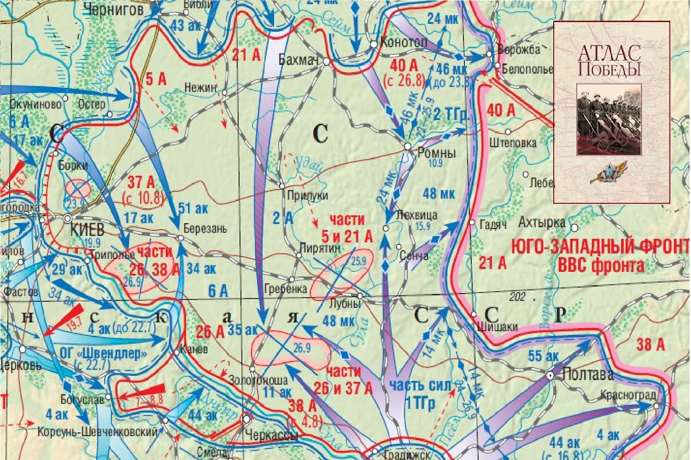
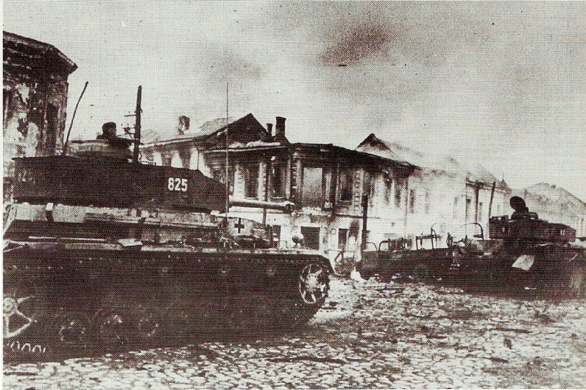
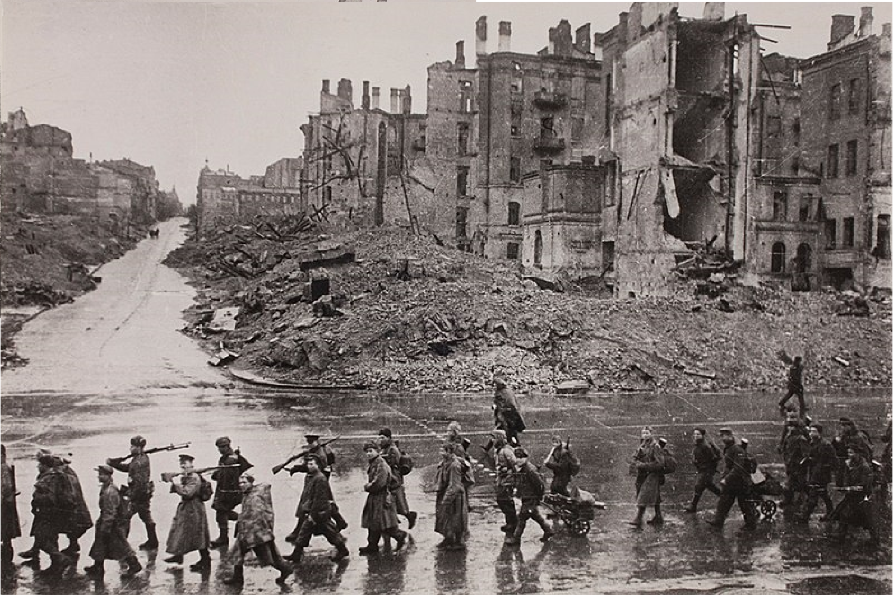

|  |
Оборона Киева — одно из ключевых событий Великой Отечественной войны, происходившее в 1941 году. Это сражение стало важной вехой в ходе войны и оказало значительное влияние на дальнейшие события.
Предыстория
1. Стратегическое значение Киева: Киев был важным промышленным и культурным центром, а также ключевым транспортным узлом. Его захват открывал путь для немецких войск на восток.
2. Начало войны: Операция "Барбаросса", начавшаяся 22 июня 1941 года, привела к быстрому продвижению немецких войск по территории Советского Союза.
|
▎Ход обороны
1. Подготовка к обороне: С началом войны советское командование предприняло меры по укреплению обороны Киева, однако подготовка была недостаточной. Город был защищен различными укреплениями, но не все позиции были готовы к длительной осаде.
2. Силы сторон:
- Советские войска: В районе Киева находились части 37-й армии, 26-й армии и другие соединения, однако их численность и оснащение были недостаточны для противостояния хорошо организованным немецким войскам.
- Немецкие войска: Группа армий "Юг" под командованием генерала Федор фон Бока, которая имела превосходство в численности и технике.
3. Сражение: Оборона Киева началась в июле 1941 года и продолжалась до сентября того же года. Немецкие войска начали наступление с юга, окружая город с разных сторон. В ходе боев советские войска пытались удерживать позиции, но столкнулись с мощными атаками противника.
4. Окружение: В начале сентября 1941 года немцы завершили окружение Киева, и советские войска оказались в ловушке. Несмотря на попытки прорыва, советским частям не удалось выбраться из окружения.
|
 |
|  |
▎Итоги
- Падение Киева: 19 сентября 1941 года Киев был захвачен немецкими войсками. Это стало одним из крупнейших поражений Красной армии на начальном этапе войны.
- Потери: Поражение под Киевом привело к значительным потерям среди советских войск и гражданского населения, а также к захвату большого количества военной техники.
▎Значение
Оборона Киева стала важным уроком для советского командования. Она выявила недостатки в организации и планировании оборонительных операций, а также необходимость улучшения взаимодействия между различными родами войск. Это сражение оказало влияние на дальнейшую стратегию ведения войны и подготовку Красной армии к будущим боям. Вверх
|